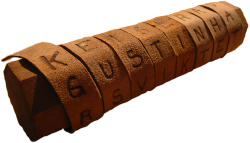

I am going to talk about classical ciphers that I've learnt about, and how they work.
Below is a cool list of different ciphers
- Caesar cipher
- Shifts every letter in a string by n places to the left/right, looping back around at A or Z.
- Substitution cipher
- The monoalphabetic substitution swaps all the letters in a string with other letters.
- Affine cipher
- Using an integer key pair (a,b), and converting each letter to its numerical equivalent x, this cipher encrypts via the formula (ax + b) MOD 26.
- Transposition cipher
- Changes the positions of every letter in the plaintext.
- And many many more!
If you're super curious about this stuff visit this link here.
Origin of these ciphers
| Cipher | When was it made? | By who? |
|---|---|---|
| Caesar cipher | Around 58 BC | Julius Caesar and his armies |
| Substitution cipher | 600-500BC | Hebrew Scholars |
| Affine cipher | No specific time | Many different mathematicians |

This is a scytale, a tool used in ancient Greece to encrypt messages via a transposition cipher